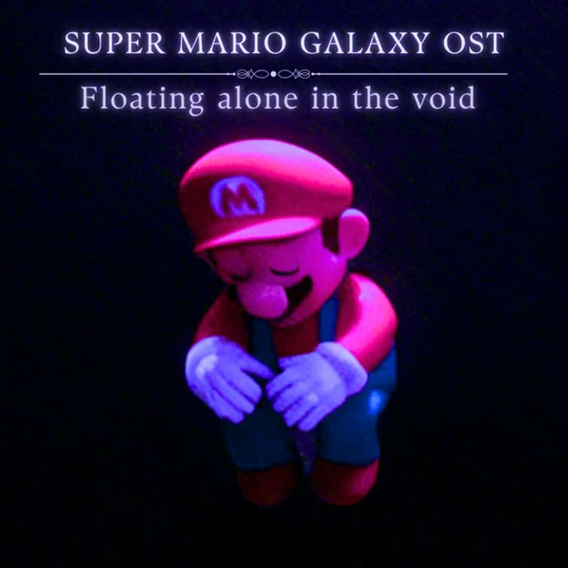

Mario Galaxy but You're Floating Alone in an Emotional Void
A slow, melancholic Middle Eastern-tinged take on the music of Super Mario Galaxy, the 2007 Wii platformer. 17 tracks with 20-second previews.
Get this album- 1Gateway Galaxy
- 2Rosalina in the Observatory 1
- 3Battlerock Galaxy
- 4The Honeyhive
- 5Gusty Garden Galaxy
- 6Dusty Dune Galaxy
- 7Buoy Base Galaxy
- 8Deep Dark Galaxy
- 9Space Junk Road
- 10Melty Molten Galaxy
- 11The Fiery Stronghold
- 12The Star Festival
- 13Waltz of the Boos
- 14The Galaxy Reactor
- 15Final Battle with Bowser
- 16Family
- 17Sad Girl